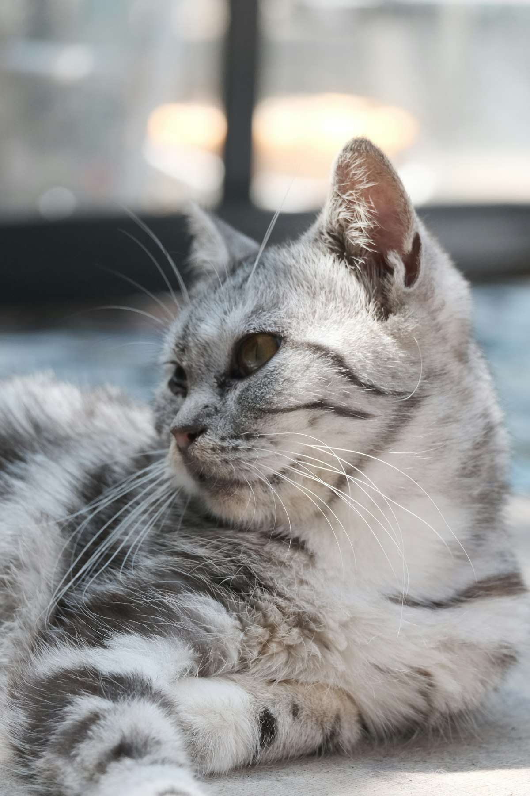

아메리칸 숏헤어 수명 — 순종 고양이 평균 10.41년, 성격·심장병·비만 관리 가이드

아메리칸 숏헤어(아메숏) 수명은 이 품종만 따로 집계한 대규모 사망기록이 아직 없어, 영국 VetCompass 사망기록 7,936마리에서 나온 순종 고양이 평균 기대수명 10.41년(믹스 11.89년)이 지금 댈 수 있는 가장 가까운 근거입니다. 다부진 체격에 클래식 태비 무늬가 매력인 아메숏은 "튼튼하고 원만한 만능형"으로 불리고, 사람도 잘 따르고 적응력도 좋아 첫 고양이로 손색없습니다. 다만 '튼튼하다'는 평판과 심장병 기록이 어떻게 함께 가는지, 같은 숏헤어인 코숏과는 국내 자료에서 어디가 갈리는지는 출처를 놓고 따져 볼 만합니다.
한눈에 보는 아메숏
| 크기 | 중~대형, 다부진 체격 (CFA 품종 설명은 'medium to large'로만 적고 체중 범위는 제시하지 않음) |
|---|---|
| 수명 | 품종 단독 대규모 자료 없음 · 영국 VetCompass 순종 평균 10.41년, 믹스 11.89년 |
| 털빠짐 | 중간 (단모, 주 1~2회 빗질) |
| 활동량 | 중상 (사냥 놀이 좋아함) |
| 성격 | 원만·활발, 독립심과 애교의 균형 |
| 초보자 적합도 | 매우 높음 |
수명 — 이 글이 '13~17년'을 지운 이유
이 글은 처음에 아메숏 수명을 '약 13~17년'이라고 적었습니다. 품종 소개 글에 흔히 도는 범위를 옮긴 것인데, 사망기록으로 계산한 출처를 끝내 찾지 못해 지웠습니다. 품종 등록단체 CFA 의 아메리칸 숏헤어 설명에도 수명 항목은 없습니다.
고양이 품종별 기대수명을 실제 사망기록으로 계산한 자료로는 영국 1차 진료 네트워크 VetCompass 의 수명표(Teng 외, J Feline Med Surg 2024)가 있습니다. 2019년에 진료받던 고양이 가운데 사망이 확인된 7,936마리로 만들었는데 그중 순종은 819마리(10.3%)뿐이고, 사망이 15마리 이상 모인 12개 품종군(믹스 포함)만 따로 계산했습니다. 아메리칸 숏헤어는 그 12개에 들지 못했습니다. 그래서 쓸 수 있는 숫자는 순종 전체 10.41년(95% 신뢰구간 9.99~10.83)과 믹스 11.89년뿐입니다. 순종 전체라는 말은 기대수명 14.42년인 버미즈와 6.68년인 스핑크스가 한데 섞인 평균이라는 뜻이어서, 아메숏이 그 평균의 위쪽인지 아래쪽인지는 이 자료로 알 수 없습니다.
아메숏의 고향인 미국 쪽 숫자는 방향이 다릅니다. 같은 논문이 비교 대상으로 인용한 미국 Banfield 동물병원 수명표에서는 순종 11.85년, 믹스 11.69년으로 순종이 짧지 않았습니다. 저자들은 연구 설계와 표본, 나라마다 다른 인기 품종 구성, 안락사 결정 방식 같은 요인이 겹쳤을 수 있다고 보고, 미국 순종 고양이가 주로 실내에서 길러져 사고·싸움·감염으로 인한 사망이 줄었을 수 있다고 덧붙입니다. Teng 논문이 옮긴 미국 숫자도 순종·믹스 구분까지이고, 영국 숫자는 영국 사육환경의 결과라는 점은 같습니다. 한국 자료는 바로 아래에 따로 정리했습니다.
국내 데이터 속 아메숏 — 진료기록 788건, 코숏과 무엇이 다른가
국내에서 아메숏이 동물병원에 얼마나 오는지는 Lee 외(J Vet Clin 2022)에서 확인할 수 있습니다. 2016~2017년 두 해 동안 30개 동물병원에 쌓인 고양이 진료기록 32,728건 가운데 아메리칸 숏헤어는 788건(2.41%)이었습니다. 표 본문이 아니라 각주에 적힌 숫자입니다. 코리안 숏헤어 40.5%, 페르시안 10.3%, 스코티시 폴드 7.7%, 러시안 블루 7.6%, 믹스 5.5%, 샴 5.2%, 터키시 앙고라 5.1%까지가 상위 7개이고, 여기에 들지 못한 품종은 '기타' 18.0%(5,896건)로 묶였습니다. 그 안에서 뱅갈 893건, 먼치킨 794건 다음이 아메숏입니다.
두 가지를 감안해 읽어야 합니다. 2.41%는 기르는 마릿수가 아니라 병원 방문 기록의 비중입니다. 한 고양이가 다른 문제로 다시 오면 새 기록으로 셌기 때문에, 인기 순위로 옮겨 읽을 수 없습니다. 그리고 이 논문의 품종별 질환 분포표는 상위 7개 품종과 '기타'만 다루므로, 아메리칸 숏헤어 단독 질병 통계는 국내에 아직 없습니다.
코숏과 아메숏 — 뿌리는 닮았고, 기록에서는 갈린다
둘 다 이름에 숏헤어가 붙고 체형도 비슷해 자주 혼동됩니다. 출발점은 실제로 닮았습니다. CFA 품종 설명에 따르면 아메숏의 조상은 초기 이주민과 함께 북미로 건너온 단모 고양이로, 당시 배들은 쥐를 잡으려고 고양이를 태웠습니다. 이 고양이들은 1895년 미국 첫 캣쇼에 50마리 넘게 나왔고, 1906년 CFA 창립 때 처음 공인된 다섯 품종에 들었으며, 'Domestic Shorthairs'(집고양이 단모)라는 이름으로 출전하다 1965년에 지금 이름을 받았습니다. 평범한 집고양이에서 출발해 품종 표준에 맞춰 혈통을 등록하고 선별 번식한 쪽이 아메리칸 숏헤어이고, 코리안 숏헤어는 이 땅의 토착 집고양이를 부르는 이름입니다.
국내 논문 두 편도 둘을 다르게 취급합니다. 진료기록 논문은 차트에 KSH, Korean domestic shorthair 등으로 흩어져 있던 표기를 '코리안 숏헤어' 한 항목으로 통일해 13,248건(40.5%)으로 집계하면서, 코숏과 믹스를 한국 길고양이에서 가장 흔한 두 집단으로 적습니다. 서울 사망기록 논문은 한발 더 나아가 품종이 domestic short hair 로 적힌 고양이를 아예 믹스로 분류했습니다. 같은 기준이면 아메숏은 순종 쪽입니다. 이 분류 차이가 아래 두 자료에서 그대로 숫자 차이로 나타납니다.
| 질환군(ICD-11 분류) | 코리안 숏헤어 | 믹스 | 기타 품종 (아메숏 포함 5,896건) |
|---|---|---|---|
| 외부 요인(사고·외상처럼 몸 밖에서 온 원인) | 4.4% | 4.9% | 2.8% |
| 근골격계 질환 | 4.6% | 5.1% | 3.2% |
| 피부 질환 | 7.1% | 7.0% | 9.0% |
| 호흡기 질환 | 5.9% | 5.1% | 7.3% |
| 귀 질환 | 2.2% | 2.7% | 3.5% |
| 순환기 질환(심장 포함) | 0.5% | 1.0% | 0.9% |
각 열은 그 집단의 진료기록 안에서 해당 질환군이 차지한 비율입니다(Lee 외 2022, Table 3). 맨 오른쪽 열은 아메숏 단독이 아니라 뱅갈·먼치킨·아비시니안·노르웨이숲 등이 섞인 값이고, 아메숏 788건은 그 가운데 약 13%입니다. 이 표로 말할 수 있는 것은 "아메숏은 이렇다"가 아니라 "코숏·믹스와 나머지 품종묘는 여기서 갈린다"까지입니다.
가장 뚜렷하게 갈리는 칸은 외부 요인입니다. 코숏 4.4%(95% 신뢰구간 3.0~4.7), 믹스 4.9%(4.0~6.0)인데 기타 품종은 2.8%(2.4~3.3)였습니다. 논문의 해석은 이렇습니다. 한국 길고양이에서 가장 흔한 품종이 코숏과 믹스이고, 그래서 이 두 집단이 다른 품종보다 바깥 위험에 더 노출된 것으로 생각된다는 것입니다. 체질이 아니라 어디서 와서 어떻게 사는지가 만든 차이라는 뜻입니다. 반대로 피부·호흡기·귀 질환군은 기타 품종 쪽이 코숏보다 높았는데, 이 묶음에는 사정이 제각각인 품종이 섞여 있어 아메숏에게 그대로 옮겨 읽을 수는 없습니다.
순환기 0.9%도 "심장병이 드물다"로 읽으면 안 됩니다. 이 자료는 고양이의 77.6%가 4세 미만(평균 2.5세)인 젊은 표본이고, 순환기 질환군 비중은 1세 미만 0.4%에서 7~10세 2.0%, 15세 이상 4.5%로 나이와 함께 올랐습니다(품종 통합 수치). 국내 품종묘 집단이 나이를 먹으면 이 칸은 달라질 수 있습니다.
서울 사망기록 — 아메숏은 '순종 575마리' 쪽에 선다
국내에서 고양이 수명을 사망기록으로 계산한 자료로는 Yang 외(Front Vet Sci 2025)가 있습니다. 서울 6개 동물병원의 2004~2022년 기록에서 사망이 확인된 고양이 1,213마리를 분석했는데, 품종별 수치는 없고 순종과 믹스로만 나눴습니다. 결과는 순종 575마리 중앙 생존 1,827일(약 5년), 믹스 638마리 1,012.5일(약 2.8년)로, 믹스가 더 오래 산 영국과 방향이 반대입니다. 앞서 본 분류 기준대로라면 코숏은 믹스 638마리 쪽에, 아메숏은 순종 575마리 쪽에 들어갑니다. 다만 그 575마리 가운데 아메숏이 몇 마리였는지는 논문에 나오지 않습니다.
그렇다고 아메숏이 코숏보다 두 배 가까이 오래 산다는 뜻은 아닙니다. 저자들이 드는 이유는 품종이 아니라 출신입니다. 한국 길고양이의 압도적 다수가 믹스이고 길고양이를 데려다 집에서 키우는 일이 흔한데(2018년 농림축산식품부 조사에서 고양이 보호자의 20.6%, 개 보호자는 4.6%), 길에서 온 고양이는 고양이백혈병바이러스(FeLV) 같은 감염병 위험이 높아 이것이 믹스의 짧은 수명에 한몫했을 수 있다는 설명입니다. 원문도 'may be a contributing factor'라고 가능성으로만 적었습니다.
절대값도 그대로 받아들이면 곤란합니다. 이 표본은 병원에서 사망이 확인된 고양이만 모은 것이라 지금 살아 있는 고양이는 한 마리도 들어 있지 않고, 저자들 스스로 건강하지 않은 동물이 과대 대표됐을 수 있다고 한계에 적었습니다. 고양이 전체의 출생 시 기대수명이 5.384년으로 계산된 것도 그래서입니다. 아메숏 보호자가 이 자료에서 가져갈 것은 '5년'이라는 숫자가 아니라, 순종이 믹스보다 짧게 산다는 영국 결과가 한국에서는 재현되지 않았다는 사실입니다.
성격과 기질
아메숏은 위에서 본 대로 이주민의 배에서 쥐를 잡던 일 잘하는 사냥꾼 출신입니다. 그래서 지금도 움직이는 장난감에 진심이고, 몸놀림이 좋습니다. 성격은 원만해서 아이·다른 반려동물과도 잘 지내고, 과하게 붙어 있지 않으면서도 사람 곁을 좋아하는 독립심과 애교의 균형형이에요. CFA 품종 설명도 고른 기질과 다정함을 특징으로 들고, 다른 동물과 어린아이에게 매우 관대하다(very tolerant)고 적습니다.
적응력이 좋아 환경 변화에 비교적 의연한 편이라, 첫 고양이로도 무난합니다.
입양 전 현실 체크 (비용·공간·시간)
고양이가 개보다 손이 덜 간다는 말은 대체로 맞지만, 아메숏에는 단서가 붙습니다. 체격이 중~대형으로 다부진 만큼 사료와 모래 소비가 소형 품종보다 큽니다. 체중 5kg 성묘를 기준으로 한 달 지출을 잡아보면 대략 이 정도입니다.
| 항목 | 월 대략 | 비고 |
|---|---|---|
| 사료 | 3~5만 원 | 건사료 하루 55~75g(사료 열량에 따라 차이), 습식을 섞으면 더 올라갑니다 |
| 모래 | 2~3만 원 | 몸집이 큰 만큼 배변량도 많은 편 |
| 예방·검진 | 1.5~2.5만 원 | 연 1회 접종과 건강검진을 12개월로 나눈 값 |
| 장난감·스크래처 | 1만 원 안팎 | 잘 노는 품종이라 소모품에 가깝습니다 |
| 합계 | 8~12만 원 | 중성화(수컷·암컷에 따라 대략 10~40만 원)와 첫해 기초 접종은 별도 |
공간은 넓이보다 높이
원룸에서도 충분히 키울 수 있습니다. 다만 아메숏은 잘 뛰고 잘 오르는 편이라 바닥 면적보다 세로 동선이 중요합니다. 캣타워 하나, 혹은 벽 선반 두세 개만 있어도 활동량이 확 달라져요. 화장실은 마릿수보다 하나 더 두는 것이 기본이고, 몸집이 크니 몸길이의 1.5배 정도 되는 넉넉한 크기를 고르는 편이 좋습니다. 좁은 화장실은 참는 습관으로 이어질 수 있습니다.
하루에 들어가는 돌봄 시간
화장실 치우기 아침저녁 각 2~3분, 사냥 놀이 2~3회 합쳐 20~30분, 물그릇·밥그릇 정리 5분, 빗질은 주 1~2회 5분. 다 합쳐도 하루 40분 안팎으로 개보다 확실히 적습니다. 산책 의무가 없다는 점이 직장인에게는 큰 차이예요.
혼자 두는 시간에 대한 내성
독립적인 성향이라 낮 8~10시간 부재는 무리가 없습니다. 하루 정도 집을 비우는 1박도 자동 급식기와 물, 화장실 두 개를 준비하면 대체로 괜찮습니다. 다만 2박부터는 화장실이 빠르게 더러워지고 물 상태도 나빠지므로 방문 돌봄을 부탁하는 편이 안전해요. 대신 활동성이 있는 품종이라 심심함은 잘 탑니다. 창밖이 보이는 자리와 퍼즐 피더 하나가 있으면 낮 시간이 훨씬 덜 지루해집니다.
주의해야 할 질병
- 비대성 심근증(HCM) — 고양이에서 가장 흔한 심장병입니다. 이 품종과의 관계는 출처에 따라 말이 다릅니다. 코넬대 고양이건강센터는 HCM 이 더 흔한(more prevalent) 품종으로 메인쿤·랙돌·브리티시 숏헤어·스핑크스 등과 함께 아메리칸 숏헤어를 듭니다. 반면 CFA 품종 설명은 비대성 심근증이 1980~90년대 일부 개체에서 보고됐지만 예방 검사와 선별 번식 덕에 품종에서 대부분 사라졌다(largely disappeared)고 적고, 지금 알려진 품종 특이 질환은 없다고 말합니다. 등록단체의 자기 평가와 대학 기관의 목록이 엇갈리는 셈이고, 아메숏의 HCM 유병률을 숫자로 제시한 자료는 두 곳 어디에도 없습니다. 확진은 심장 초음파로 합니다. 코넬대는 힘들거나 빠른 호흡, 입을 벌리고 쉬는 숨, 무기력을 증상으로 들고, 혈전이 뒷다리 혈류를 막으면 갑작스러운 통증이나 마비가 올 수 있다고 설명합니다. 이런 모습이 보이면 바로 병원에 가세요. 분양을 받는다면 부모묘의 심장 검사 이력을 물어볼 이유는 충분합니다.
- 비만 — 아메숏 글마다 빠지지 않는 주제지만, 코넬대 비만 안내문과 CFA 품종 설명 어디에도 이 품종이 유독 살이 잘 찐다는 말은 없습니다. 고양이 전체의 문제로 보는 편이 정확합니다. 코넬대 비만 안내문은 비만을 정상 체중보다 20% 이상 무거운 상태로 정의하고, 동물병원에 오는 고양이의 절반가량('Probably 50 percent')이 과체중 이상일 것이라는 수의사의 말을 싣습니다. 과체중은 골관절염과 당뇨를 악화시킬 수 있습니다. 영국 VetCompass 자료에서도 성묘 체중이 같은 품종·성별의 중앙값에서 100g 벗어날 때마다 (찐 쪽이든 마른 쪽이든) 수명이 0.02년씩 짧았습니다. (비만도 자가진단)
- 치주 질환 — 고양이 공통. 양치 습관과 정기 스케일링 상담이 좋습니다.
- 하부요로계 질환 — 물을 적게 마시면 위험이 커집니다. 음수량을 늘려주세요. 국내 30개 병원 진료기록에서 비뇨·생식기 질환군 비중은 중성화한 수컷이 11.0%로 가장 높았고, 중성화하지 않은 수컷은 3.9%였습니다(품종 통합 수치). 중성화한 수컷 아메숏이라면 화장실 횟수와 소변 덩어리 크기를 평소에 봐 두세요. (방광염·요로결석 가이드)
나이대별 관리 포인트
자묘기 (1세까지)
성장 속도가 빨라 자묘용 사료를 넉넉히 주어도 되는 거의 유일한 시기입니다. 문제는 이 습관을 그대로 성묘까지 끌고 가는 것인데, 그 얘기는 아래에서 다시 하겠습니다. 고양이의 사회화 창은 생후 2~7주 무렵으로, 3~14주인 강아지보다 이르게 닫힙니다. 이 시기에 발톱깎이, 빗, 이동장, 낯선 사람의 손길을 좋은 경험으로 붙여두면 평생이 편해져요. 반대로 이때 사람 손을 사냥감으로 배우면 성묘가 된 뒤 힘 조절 없이 뭅니다. 중성화 시기는 보통 생후 5~7개월 사이에 상담합니다. (고양이 중성화)
성묘기 (1~7세)
아메숏에게 가장 중요한 구간입니다. 중성화 이후는 체중을 가장 자주 확인해야 하는 때예요. 코넬대 기준으로 비만은 정상 체중보다 20% 이상 무거운 상태인데, 5kg짜리 고양이라면 1kg만 늘어도 그 선에 닿습니다. 결코 작은 변화가 아닙니다. 한 달에 한 번 재고, 갈비뼈가 살짝 만져지는지 손으로 확인하세요. 이미 살이 붙었다면 굶기는 방식은 금물입니다. 코넬대는 일주일에 체중의 1~2%씩 천천히 빼는 것을 목표로 삼으라 하고, 갑작스러운 절식은 지방간(hepatic lipidosis) 같은 심각한 문제를 부를 위험이 있다고 경고합니다. 심장(HCM)은 겉으로 조용히 진행될 수 있어, 정기 검진 때 청진을 받고 심잡음이나 부정맥이 잡히면 심장 초음파로 넘어가는 순서를 밟습니다.
노령기 (8세 이후)
노령묘의 이상 신호는 대개 물그릇과 화장실에서 먼저 보입니다. 물을 부쩍 많이 마시고 모래 덩어리가 커졌다면 신장·당뇨·갑상선 쪽을 확인해 볼 시점이에요. 잘 먹는데 살이 빠지는 변화도 그냥 넘기지 마세요. (고양이 만성 신장병) 관절 문제는 고양이에서 절뚝임보다 "높은 곳에 안 올라감, 뛰기 전에 망설임"으로 나타납니다. 체중이 실리는 아메숏에서는 특히 눈여겨볼 신호입니다. 8세부터는 1년에 두 번, 혈액·소변검사를 포함한 검진을 권합니다.
털 관리와 털빠짐 대응
"단모라 빗질할 게 없다"는 말은 아메숏에는 잘 맞지 않습니다. 털 길이가 짧을 뿐 속털까지 촘촘하게 들어찬 두꺼운 털이라, 계절이 바뀌면 검은 옷과 소파에 남는 양이 만만치 않아요.
도구와 주기
고무 재질의 러버 브러시나 그루밍 글러브가 이 털에 가장 잘 맞습니다. 평소 주 1~2회, 환모기에는 하루 3~5분이면 충분해요. 슬리커 브러시를 쓸 때는 힘을 빼고 짧게 지나가야 피부가 긁히지 않습니다. 빗질을 하면 스스로 핥아 삼키는 털이 줄어 헤어볼도 함께 줄어듭니다.
환모기
CFA 품종 설명은 아메숏을 손질이 많이 필요한 품종은 아니라고 하면서도, 봄에는 속털이 빠진다고 적습니다. 이 기간에는 빗질을 매일로 올리고, 카펫이나 패브릭 소파가 있다면 청소 주기도 함께 당겨야 합니다. 젖은 손으로 몸을 한 번 쓸어주는 것만으로도 뜬 털이 상당히 걷힙니다.
목욕·발톱·양치
목욕은 기본적으로 필요하지 않습니다. 스스로 하는 그루밍으로 충분하고, 오염이 심할 때만 고양이 전용 샴푸를 쓰면 됩니다. 발톱은 2~3주에 한 번, 특히 앞발 위주로 끝의 투명한 부분만 잘라주세요. 스크래처는 세로형과 가로형을 하나씩 두고 어느 쪽을 쓰는지 지켜보세요. 털 관리에 손이 덜 가는 품종이니, 아낀 시간은 양치에 쓰는 것이 남습니다. 주 3회 이상이 목표예요.
일상 관리 (놀이·식이)
사냥 놀이
사냥 본능이 강한 품종이라 낚싯대 장난감으로 하루 2~3회, 5~10분씩 놀아주면 비만 예방과 스트레스 해소를 한 번에 잡을 수 있습니다.
식이 관리
"그릇 비면 채워주기"는 아메숏에겐 금물입니다. 코넬대 고양이건강센터는 자율 급식 대신 끼니를 정해 주고, 건사료보다 단백질이 많고 탄수화물이 적은 편인 습식(캔)을 활용하라고 권합니다. 급여량을 재서 주고, 사료 선택은 사료 고르는 기준을 참고하세요. 물그릇·정수기를 여러 곳에 두어 음수량을 늘려주면 비뇨기 건강에도 좋습니다.
초보 집사가 자주 하는 실수
- 자율 급식을 성묘까지 그대로 유지하기 — 자묘기에는 맞는 방식이지만, 코넬대 비만 안내문은 건사료를 하루 종일 그릇에 채워 두는 자율 급식을 고양이 비만의 주요 원인 가운데 하나(a major factor)로 꼽습니다. 하루 총량을 저울로 재서 2~3회로 나누고, 일부는 퍼즐 피더에 담으면 먹는 속도까지 늦출 수 있습니다.
- 손이나 발로 놀아주기 — 사냥 본능이 강한 품종이라 대상이 사람 몸으로 각인되면 성묘가 됐을 때 힘 조절 없이 뭅니다. 처음부터 낚싯대나 인형을 사이에 두세요. 이미 버릇이 들었다면 물릴 때 소리를 지르기보다 그 자리에서 놀이를 멈추는 편이 낫습니다.
- 레이저 포인터만으로 놀아주기 — 아무리 쫓아도 잡히지 않아 사냥이 완결되지 않습니다. 끝날 때는 실물 장난감을 잡게 하거나 간식으로 마무리해 주세요.
- 구토를 전부 헤어볼로 넘기기 — 단모라 헤어볼이 적을 거라 생각하기 쉽지만 속털이 촘촘해 삼키는 털이 적지 않습니다. 다만 구토가 주 1회 이상 반복되거나, 먹은 직후에 토하거나, 토한 뒤 기운이 없다면 헤어볼이 아닐 수 있으니 진료를 받아보세요. (고양이 구토, 넘겨도 되는 경우와 아닌 경우)
사회화와 생활 훈련
고양이는 훈련이 안 된다는 말은 사실이 아닙니다. 간식에 반응하는 아메숏이라면 그 먹성이 그대로 훈련 동기가 됩니다. 간식 한 알로 유도할 수 있는 행동이 많아 "이리 와", "손 터치", "이동장 들어가기" 정도는 며칠이면 붙어요. 반대로 혼내기는 효과가 없습니다. 행동이 줄어드는 게 아니라 보호자를 피하는 쪽으로만 학습됩니다.
이동장 훈련이 1순위
평소에는 넣어뒀다가 병원 갈 때만 꺼내면, 이동장 자체가 나쁜 일의 신호가 됩니다. 문을 떼거나 열어둔 채 거실 한쪽에 두고 담요와 간식을 넣어 잠자리 중 하나로 만들어 두세요. 병원 가는 길의 스트레스가 줄면 정기 검진 자체가 수월해지고, 조용히 진행되는 심장 질환처럼 조기 발견이 중요한 문제에서 특히 도움이 됩니다.
발톱깎기와 신체 접촉 둔감화
한 번에 다 깎으려 하지 말고 하루에 한두 개씩 자르고 바로 간식을 주는 식으로 나누세요. 발을 만지는 것, 입술을 들어 이를 보는 것, 귀를 젖히는 것도 같은 방식으로 짧게 반복하면 나중에 양치와 진료가 훨씬 편해집니다.
다른 반려동물과 합사
적응력이 좋은 편이라 합사 성공률이 낮지 않지만, 순서를 건너뛰면 틀어집니다. 처음 며칠은 공간을 분리해 냄새만 교환하고, 다음에는 문틈이나 안전문 너머로 서로를 보게 한 뒤, 마지막에 짧은 대면을 반복하는 순서로 보통 2~4주를 잡습니다. 밥그릇과 화장실은 처음부터 따로 두어야 다툼이 줄어듭니다.
이런 분께 잘 맞아요
- 손이 덜 가는 튼튼한 첫 고양이를 원하는 분
- 매일 짧은 놀이 시간을 내줄 수 있는 집사
- 아이·다른 반려동물이 있는 가정
자주 묻는 질문 (FAQ)
Q. 아메리칸 숏헤어 수명은 몇 년인가요?
이 품종만 따로 집계한 대규모 사망기록은 없습니다. 가장 가까운 근거는 영국 VetCompass 사망기록 7,936마리로 만든 수명표의 순종 고양이 평균 10.41년, 믹스 11.89년입니다. 같은 논문이 인용한 미국 Banfield 수명표에서는 순종 11.85년, 믹스 11.69년이었습니다. 웹에 도는 '13~17년' 같은 범위는 출처를 확인하지 못했습니다.
Q. 코숏과 아메숏은 같은 고양이인가요?
아닙니다. 아메리칸 숏헤어는 CFA 가 1906년 창립 때부터 공인한 혈통 품종이고, 코리안 숏헤어는 국내 토착 집고양이를 부르는 이름입니다. 국내 30개 동물병원 진료기록에서 코숏은 40.5%, 아메숏은 2.41%였고, 서울 사망기록 연구는 domestic short hair 로 적힌 고양이를 믹스로 분류해 둘이 서로 다른 집단에 들어갑니다.
Q. 아메숏은 안기는 걸 좋아하나요?
무릎 위보다 "옆에 같이 있기"를 선호하는 경향이 있습니다. 억지로 안기보다 곁을 내주는 방식이 잘 맞아요.
Q. 혼자 두고 출근해도 괜찮을까요?
독립심이 있는 편이라 비교적 잘 지내지만, 퇴근 후 놀이 시간으로 에너지를 풀어줘야 합니다. 장기 부재 시엔 돌봄을 부탁하세요.
Q. 무늬가 다양하다던데요?
실버 클래식 태비(소용돌이 줄무늬)가 대표지만 CFA 는 색 조합이 100가지가 넘는다고 소개합니다. 무늬와 성격은 무관하니 건강 이력을 더 중요하게 보세요.